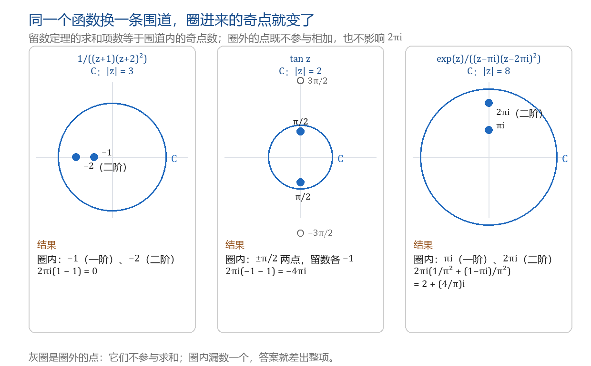
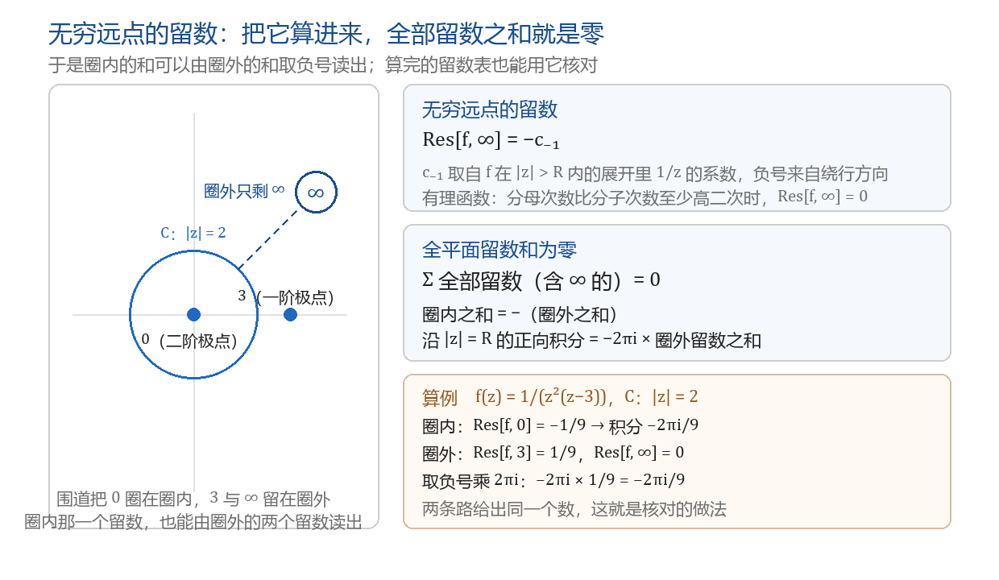

留数与留数定理
本节目标：能按奇点类型默写四种留数算法，并用留数定理算出闭路积分。
卷面怎么考
留数是本章分值最高的一处，卷面上一共三种落点：
- 解答题，7～10 分，两种问法。其一，求 f(z) 在有限复平面内的奇点和相应的留数，不要求积分；其二，用留数算出沿正向圆周一整圈的积分。合肥工业大学 2022～2024 的卷子里，这类题排在第 4、6、7 题上，题面形如 f(z)=\frac{\cos z}{z^2(z^2-\pi^2)}、f(z)=\frac{1}{(z+1)(z+2)^2}、\oint_{|z|=8}\frac{e^z\,dz}{(z-\pi i)(z-2\pi i)^2}。西安建筑科技大学的第三大题同为 10 分，题面是「应用留数的相关定理计算」一个沿圆周的积分。
- 填空，3 分。直接问某个点上的留数，例如 \tan z 在 z=\frac{\pi}{2} 处的留数、\operatorname{Res}\left[\frac{\sin z}{z^3},0\right]。
- 选择，3 分。给出一个函数与一个点，问它属于哪一类奇点，选项通常是一阶极点、m 阶极点、本性奇点、可去奇点这四个类型名。
这三种落点共用同一串动作：定奇点与阶 → 选规则 → 算留数 → 求和乘 2\pi i。本课把前两步压成一张选型表，后两步练到不查书。
留数是洛朗的 c₋₁
前面已经练过洛朗展开：f 在去心邻域 0<|z-z_0|<R 内解析时，可以写成只在这个环域里成立的级数
负幂项部分刻画奇点，正幂项部分与解析函数无异。其中 c_{-1} 这一项特殊：沿以 z_0 为心、半径 \rho<R 的圆周逆时针积分一圈，除它之外的每一项都积成 0（其余负幂项有原函数 \frac{(z-z_0)^{n+1}}{n+1}，正幂项在全平面上解析），只剩下
这就是留数这个名称的来处：展开式中在环路积分里留下来的那一项。形式化地写：
定义 设 z_0 是 f(z) 的孤立奇点，f 在 0<|z-z_0|<R 内的洛朗展开中 \frac{1}{z-z_0} 的系数为 c_{-1}，则称 c_{-1} 为 f(z) 在 z_0 处的留数，记作 \operatorname{Res}[f(z),z_0]。
两条直接推论，卷面上都用得上：
- 留数就是洛朗展开的 c_{-1}，因此算留数与做洛朗展开是同一件事，只是不必写出整个级数。
- 可去奇点处的留数必为 0：可去奇点的洛朗展开没有负幂项，c_{-1}=0。
例 求 f(z)=\frac{1}{z^2(z-1)} 在 z_0=0 处的留数。
在 0<|z|<1 内把 \frac{1}{z-1} 凑成几何级数 \frac{1}{z-1}=-\frac{1}{1-z}=-(1+z+z^2+\cdots)，于是
读出 c_{-1}=-1，即 \operatorname{Res}[f(z),0]=-1。
assets/img/gen/留数-四种算法-选型-本机-01.py），许可：本项目自产）一阶极点
z_0 是 f 的一阶极点时，洛朗展开的最低负幂项是 \frac{c_{-1}}{z-z_0}，两边乘上 z-z_0 再取极限，其余各项含 (z-z_0) 的正幂，全部归零，于是
形式上还有一条更省事的分式版本。若 f(z)=\frac{P(z)}{Q(z)}，P(z_0)\ne0，Q(z_0)=0、Q'(z_0)\ne0（即 z_0 是分母的一阶零点），则
三个卷面例子，都用这两条式子：
- f(z)=\tan z=\frac{\sin z}{\cos z}，z_0=\frac{\pi}{2}。这是填空 3 分那一道。分母一阶零点，(\cos z)'=-\sin z，故 \operatorname{Res}=\frac{\sin(\pi/2)}{-\sin(\pi/2)}=-1。
- f(z)=\frac{e^{iz}}{z^2-3\pi z+2\pi^2}，z_0=\pi。分母分解为 (z-\pi)(z-2\pi)，极限式给 \operatorname{Res}=\frac{e^{i\pi}}{\pi-2\pi}=\frac{1}{\pi}。
- f(z)=\frac{z^2-\pi^2}{z\sin z}，z_0=2\pi。分子在 2\pi 处不为零，分母导数为 \sin z+z\cos z，得 \operatorname{Res}=\frac{4\pi^2-\pi^2}{0+2\pi}=\frac{3\pi}{2}。
同一个函数 f(z)=\frac{1}{z^2(z-1)} 在 z_0=0 处，极限式写成 \lim_{z\to0}\frac{1}{z(z-1)}，分母趋于 0、结果发散，一阶公式没有给出数。出现这种情况说明 z_0 的阶数不是一阶，要回去重新定阶，再换下一节的公式。判断阶数的动作在上一课已经练过：看分母的零点阶数，并先用分子约掉同阶零点。
m 阶极点
z_0 是 m 阶极点时，把 (z-z_0)^mf(z) 在 z_0 邻域的展开按幂次排开：
求 m-1 阶导之后，c_{-1}(z-z_0)^{m-1} 这一项变成 (m-1)!\,c_{-1}，幂次低于 m-1 的项变成 0，幂次高于 m-1 的项含 (z-z_0) 的正幂、在 z_0 处取值为 0。于是得到一般公式：
三个位置各管一件事，默写时按这三格逐个对：先把 f 乘上 (z-z_0)^m 化成在 z_0 解析的函数，再求 m-1 阶导，最后乘系数 \frac{1}{(m-1)!} 并代 z_0。
| m | 求几阶导 | 系数 \frac{1}{(m-1)!} | 公式退化成 |
|---|---|---|---|
| 1 | 0 阶，直接代 z_0 | 1 | 一阶极点公式 |
| 2 | 1 阶 | 1 | 乘 (z-z_0)^2 后求一次导 |
| 3 | 2 阶 | \frac12 | 乘 (z-z_0)^3 后求两次导 |
| 4 | 3 阶 | \frac16 | 乘 (z-z_0)^4 后求三次导 |
m=1 那一行与上一节是同一条式子，因为 0!=1 且零阶导就是函数本身。所以整张表只需记一条：分母的幂次 m 决定求 m-1 阶导，也决定阶乘的位置。
例 f(z)=\frac{1}{(z+1)(z+2)^2}，求 z_0=-2 处的留数（这是 10 分题里的第二项）。
z_0=-2 是二阶极点，m=2，乘 (z+2)^2 后剩下 \frac{1}{z+1}，求一阶导再代 -2：
例 f(z)=\frac{e^z}{(z-1)^3}，求 z_0=1 处的留数。m=3，乘 (z-1)^3 得 e^z，求二阶导仍为 e^z，系数 \frac{1}{2!}：
这一题里若漏掉 \frac{1}{2!} 就会写成 e，与正确答案差两倍——这是 m\ge3 的题最常见的丢分处。
本性奇点
本性奇点处没有可用的极限式：\lim_{z\to z_0}(z-z_0)^m f(z) 对任何 m 都不收敛，代 z_0 无处可代。这类点只剩一条路——写出洛朗展开，直接读 \frac{1}{z-z_0} 的系数。
例 f(z)=e^{1/z}，z_0=0。在 0<|z|<+\infty 内
故 \operatorname{Res}[e^{1/z},0]=1。
例 f(z)=z^2e^{1/z}，z_0=0。上面那串乘上 z^2：
\frac1z 的系数来自 \frac{1}{3!}，故留数为 \frac16。乘法里对位要对准：找 c_{-1} 就是找「分母恰好是一次方」的那一项。
展开法对任何奇点都成立，因此它也是兜底手段。填空 3 分那道 \operatorname{Res}\left[\frac{\sin z}{z^3},0\right] 就属于这种情况：用二阶极点的公式需要对 \frac{\sin z}{z} 求导再取极限（属于 \frac00 型，要另作处理），而展开一步读出
答案直接是 0。
留数定理
把每个奇点的 2\pi i\,c_{-1} 加起来的动作，写成一条定理：
留数定理 设 C 为正向简单闭曲线，f(z) 在 C 及其内部除有限个孤立奇点 z_1,z_2,\dots,z_n 外处处解析，且这些奇点都不在 C 上，则
三个条件各对应一句检查：围道取正向；奇点只算落在 C 内部的；奇点不能落在 C 上。第二章的柯西公式算出来的每一项 2\pi i\,g(z_0)，就是 2\pi i 乘该点的留数，两条路的结果一致，留数定理把「一个奇点一项」压成一行。
固定动作四步，10 分题照写：
- 定奇点与阶：分母（或被积函数本身）为 0 的点，逐个定成可去奇点、m 阶极点或本性奇点。
- 选规则：可去奇点写 0，一阶极点用极限式，m\ge2 用阶乘与求导式，本性奇点展开。
- 算留数：每个奇点单独一格，写清乘的是哪个因子、求的是几阶导。
- 求和乘 2\pi i：把落在围道内的留数相加，再乘 2\pi i。
例 C 为 |z|=3，求 \oint_C\frac{dz}{(z+1)(z+2)^2}。
奇点 -1（一阶）与 -2（二阶）都在圈内。两个留数前面已经算过：\operatorname{Res}[f,-1]=1（按一阶公式，\frac{1}{(z+2)^2}\big|_{z=-1}=1），\operatorname{Res}[f,-2]=-1。相加为 0，故积分为 0。两个非零的留数正好抵消，答案写一个 0 收尾。
例 C 为 |z|=8，求 \oint_C\frac{e^z\,dz}{(z-\pi i)(z-2\pi i)^2}。奇点 \pi i（一阶）与 2\pi i（二阶）都在圈内：
圈内的奇点数
围道圈住几个奇点，就直接决定求和有几项，这一步在奇点个数多的时候最容易出错。\tan z 是一个典型：它的奇点是 \frac{\pi}{2}+k\pi（k 为整数），一共无穷多个，但任何一个有界围道里只装得下有限个。
例 C 为 |z|=2，求 \oint_C\tan z\,dz。
\tan z 每个奇点都是一阶极点，留数都是 \frac{\sin z}{-\sin z}=-1。落在 |z|=2 内的只有 \pm\frac{\pi}{2}（|\pm\frac{\pi}{2}|\approx1.571<2），而 \pm\frac{3\pi}{2} 已经满足 |\pm\frac{3\pi}{2}|\approx4.712>2，在圈外。于是
两个点都数进去是这一题的分界线：只算 +\frac{\pi}{2} 会得到 -2\pi i，把 \frac{3\pi}{2} 也算进来会得到 -6\pi i。

assets/img/gen/留数-围道与奇点-计数-本机-02.py），许可：本项目自产）求全部奇点与留数
第一种问法不含围道，题面写「求 f(z) 在有限复平面内的奇点和相应的留数」。这句话的含义有三条：
- 奇点列表要写全，凡分母为零的有限点都要列出，并注明类型与阶数；
- 每个奇点都要给出留数，不管它离原点多远；
- 答案里不乘 2\pi i，也算不到无穷远点（无穷远点不算有限复平面内的点）。
例（10 分题） f(z)=\frac{\cos z}{z^2(z^2-\pi^2)}，求有限复平面内的奇点与相应留数。
分母的零点是 0（二阶）与 \pm\pi（各一阶），分子在三点都不为零，故类型就是 0 二阶极点、\pm\pi 一阶极点。
z_0=0 用二阶公式，乘 (z-0)^2 后剩下 \frac{\cos z}{z^2-\pi^2}：
\pm\pi 各用一阶公式，把对方的一阶因子留给分母之外的因子：
三个留数写齐，答案就到此为止。若题面在后面追加一句「并计算 \oint_{|z|=4}f\,dz」，才进入上一节的动作：三个点都在圈内，相加得 0，积分也是 0。
同一道题里奇点类型常常混在一起。2024 年卷有一道 f(z)=\frac{z^2-\pi^2}{z\sin z}：0 是二阶极点；\pm\pi 处分子分母各自一阶为零，抵消之后是可去奇点，留数 0；其余 k\pi（k\ne0,\pm1）是一阶极点。定阶这一步与上一课的判据完全相同，先定阶再选规则。
无穷远点的留数
把 z_0=\infty 也当作奇点看。设 f 在 R<|z|<+\infty 内解析，在该环域的展开为 f(z)=\sum_{n=-\infty}^{+\infty}c_nz^n，则定义
多出来一个负号：绕无穷远点一圈的正向，在 z 平面上表现为沿顺时针走一圈。两条结论由此得到，卷面上都用得上：
- 留数定理的圈外版本：\oint_{|z|=R}f\,dz=2\pi i\sum_{|z_k|<R}\operatorname{Res}[f,z_k]=-2\pi i\sum_{|z_k|>R}\operatorname{Res}[f,z_k]，右端的和里含无穷远点这一项。
- 全平面留数和为零：若 f 在扩充复平面上只有有限个奇点，则全部留数（含 \infty 的）之和为 0。
第二条是算完之后的核对手段：把 10 分题里列出的留数全部相加，结果应当是 0；也可以反过来，围道内奇点难算时改算圈外。
例 f(z)=\frac{z+1}{z^2}。在 |z|>0 内展开为 \frac1z+\frac{1}{z^2}，c_{-1}=1，故 \operatorname{Res}[f,\infty]=-1；而 \operatorname{Res}[f,0]=1，两者相加为 0。
例 C 为 |z|=2，求 \oint_C\frac{dz}{z^2(z-3)}。圈内只有 0 这一个二阶极点：\operatorname{Res}[f,0]=\left[\left(\frac{1}{z-3}\right)'\right]_{z=0}=-\frac{1}{9}，积分是 -\frac{2\pi i}{9}。用圈外核对：\operatorname{Res}[f,3]=\frac{1}{3^2}=\frac19；分母三次、分子零次，\operatorname{Res}[f,\infty]=0（展开中 c_{-1}=0）；圈外之和 \frac19，乘 -2\pi i 得 -\frac{2\pi i}{9}，两条路一致。
有理函数的无穷远点留数有一条速判：分母次数比分子次数至少高二次时 \operatorname{Res}[f,\infty]=0。
f(z)=\frac{z+1}{z^2} 在无穷远点是二阶零点，而 \operatorname{Res}[f,\infty]=-1 并不为零。奇点类型说的是点邻近的性态，留数只是展开式中 c_{-1} 这一个数。

assets/img/gen/留数-无穷远点-留数和为零-本机-03.py），许可：本项目自产）上手做
这一课动手做两件事。第一种是记忆动作，第二种是完整算题。
- 写一张默写卡。四列：奇点类型、选哪条规则、公式怎么写、卷面例子。四种算法各自三十秒默完，写完盖上答案自查三处——一阶极点的极限里乘的是 (z-z_0)、m 阶极点公式的系数是 \frac{1}{(m-1)!}、本性奇点一律走展开。卡片收进纸笔题型整理册，与上一章的「三条路选型卡」并排。
- 独立算一道 10 分题，两种问法各写一遍。先按「求有限复平面内的奇点与相应留数」写全，再把它当成围道积分算一次，四步逐行留在纸上。收尾时用「全平面留数和为零」核对：把所有有限留数相加，与 -\operatorname{Res}[f,\infty] 对一遍，对不上说明某一步的阶数或阶乘用错了。
本课的小 lab 收在科目目录的 lab/ 下、目录名以 0014 开头：任务书、断言与参考解都在那里，lab/README.md 写着任务表与卡壳时的提示顺序。lab 的手写留数函数会与数值围道积分对照，算错的公式在那里会直接暴露成数值差。
带走的公式卡
| 题面给什么 | 用哪条 | 卷面位置 |
|---|---|---|
| 可去奇点 | 留数写 0 | 填空、选择 |
| 一阶极点 | \lim_{z\to z_0}(z-z_0)f(z)；分式可用 \frac{P(z_0)}{Q'(z_0)} | 填空 3 分、解答题 10 分的第一项 |
| m 阶极点 | \frac{1}{(m-1)!}\lim_{z\to z_0}\frac{d^{m-1}}{dz^{m-1}}\big[(z-z_0)^mf(z)\big] | 解答题 10 分 |
| 本性奇点 | 展开后读 c_{-1} | 填空 3 分 |
| 沿正向闭曲线的积分 | 2\pi i\sum 圈内留数 | 解答题 10 分 |
| 求有限复平面内的奇点与留数 | 列出全部有限奇点，各配留数，不乘 2\pi i | 解答题 10 分 |
| 圈内留数难算 | 改算圈外（含 \infty）之和再取负号 | 解答题 10 分 |
| 算完核对 | 全部留数（含 \infty）之和为 0 | 自查 |
- 李君、于非非《复变函数与积分变换》§3.5 留数与留数定理
- 合肥工业大学期末试卷（含答案与逐题分值）
- 复变函数与积分变换试题及答案（西安建筑科技大学）
- 复变积分 B 集习题（按节分组）